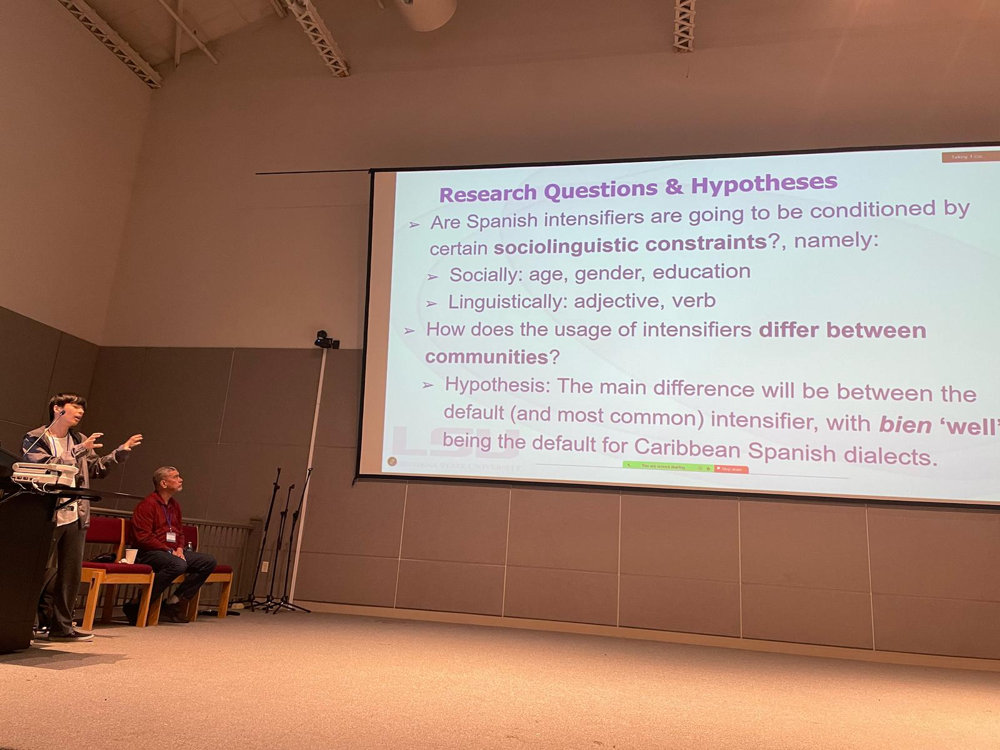
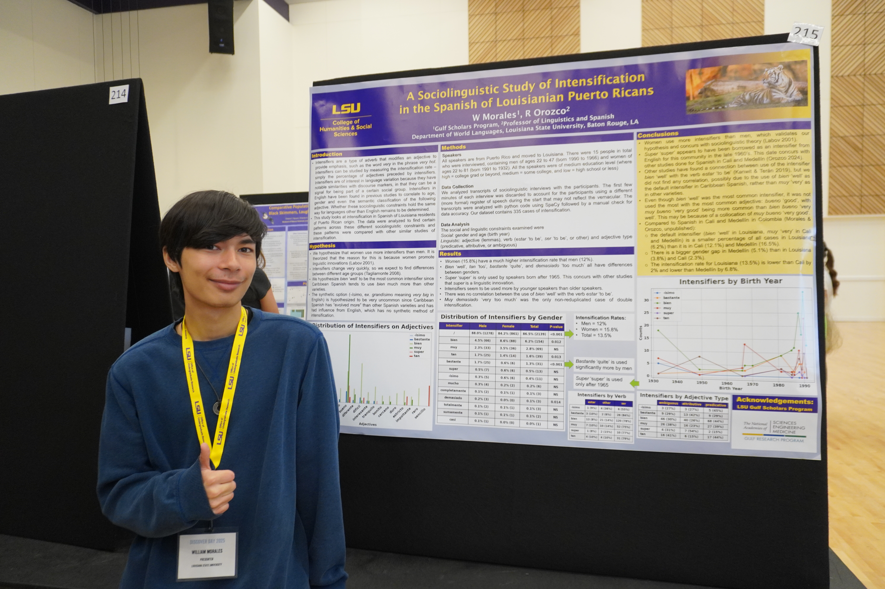
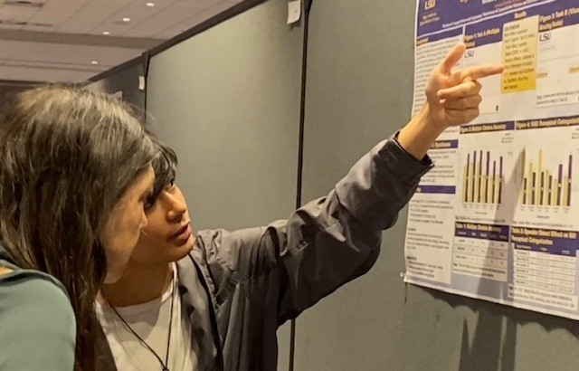

Research, Presentations, Clubs and more!
Conference Presentations
-
Some images of me presenting at T-CoL, Discover Day (2025), and ASA respectively:
-
Summer Undergraduate Research Forum, 2024
Presentation: A Sociolinguistic Study of Intensification in the Spanish of Louisianian Puerto Ricans -
Department of Communication Sciences and Disorders Roundtable, 2025
Presentation: Effect of dialectal variation on listeners' perception of English interdental fricatives and lateral liquid sounds -
Seventh Annual Tulane Conference on Linguistics (T-CoL), 2025
Presentation: A Sociolinguistic Study of Spanish Intensifiers across two Dialects -
The Fifth Annual Emory Undergraduate Linguistics Conference, 2025
Presentation: A Variationist Analysis of Intensification in Spanish -
The 12th Annual LSU Discover Day Undergraduate Research & Creativity Conference,
2025
Presentation: A Sociolinguistic Study of Intensification in the Spanish of Louisianian Puerto Ricans -
188th Meeting of the Acoustical Society of America (ASA), 2025
Presentation: Effect of dialectal variation on listeners' perception of English interdental fricatives and lateral liquid sounds -
Linguistic Society of America (LSA) Annual Meeting, 2026
Presentation: Tracking a Linguistic Innovation: A Sociolinguistic Investigation of Intensifiers in Three Spanish-speaking Communities -
Southeastern Conference on Linguistics (SECOL), 2026
Presentation: A Variationist Study of Spanish Intensifiers -
The 13th Annual LSU Discover Day Undergraduate Research & Creativity Conference,
2026
Presentation: Tracking a Linguistic Innovation: A Sociolinguistic Investigation of Intensifiers in Three Spanish-speaking Communities



Click to see all conference presentations
Research at LSU
A Variationist Study of Spanish Intensifiers
Mentor: Dr. Rafael Orozco
Fall 2023 - present
We are working on researching intensifiers in Spanish and comparing that data to other
sociolinguistic phenomena. I created my own algorithm to collect and analyze data of
intensifiers in transcripts of Spanish dialects. We are currently working to get it published.
Click here for some details
Effect of dialectal variation on listeners' perception of English interdental fricatives and lateral liquid sounds
Mentors: Dr. Hunju Chung & Dr. Irina Shport
Spring 2024 - present
We worked together to to test the perception of sounds according to different English Dialects.
I primarily worked on categorizing the stimuli, making the Qualtrics survey. Right now, I am
helping to make any changes to Praat scripts that they may need, and helping with acoustic
analysis. We are also currently working to get the study published.
Clubs & Academic Organizations at LSU
- Event Coordinator, Arabic Language Club, 2024-2025
- Vice-President, Student Linguistics Association, 2024-2025
- Historian, French Club (Le Cercle Français), 2024-2025
- President, Student Linguistics Association, 2025-present
- Vice-President, Creole Club (Organizasyon Langaj Ac Lakilchi Kréyol Lalwizyén), 2025-present, featured in Reveille
Awards
- Honors TOPS Scholarship, Every Semester
- President's Student Aid, Every Semester
- Gulf Scholars Program, Summer 2024